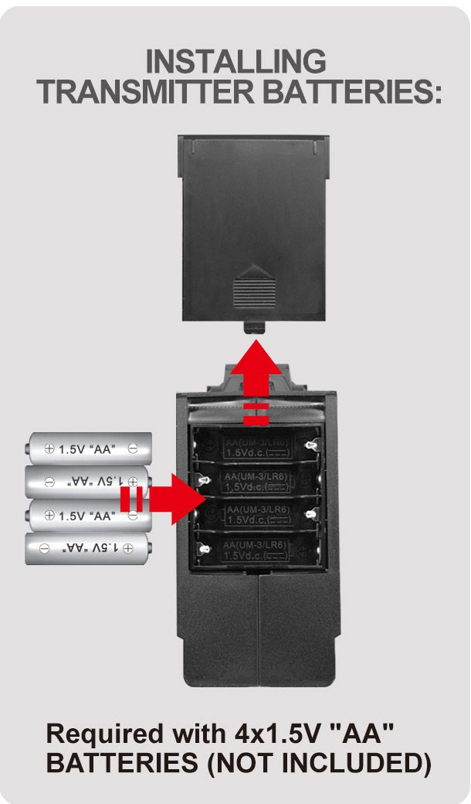
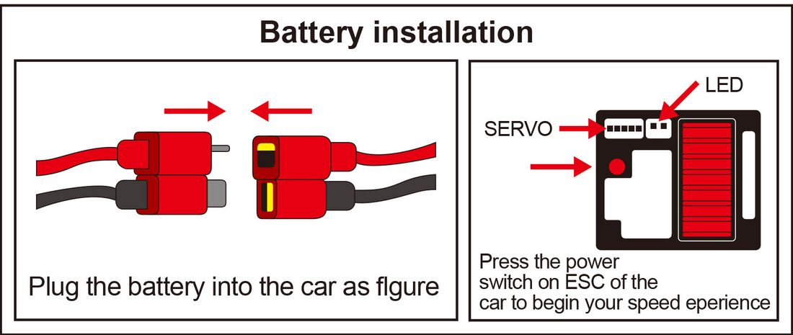

Первый запуск
- Зарядите аккумулятор. С завода он заряжен не полностью. Как заряжать — ниже.
- Вставьте 4 батарейки АА в пульт. Они не входят в комплект. Отсек — в нижней части пульта.
- Проверьте винты и гайки колёс. Производитель советует делать это перед каждым катанием.
- Подключите аккумулятор к машине красными разъёмами T-plug. Они вставляются только одной стороной.
- Включите пульт, потом машину кнопкой на регуляторе. Загорится светодиод — связь есть.
- Проверьте на весу. Приподнимите машину: руль влево-вправо, курок газа на себя и от себя. Колёса должны отвечать.
- Если машину уводит в сторону на ровном месте, подстройте триммер руля в отсеке под крышкой сбоку пульта.

